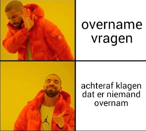

Deze maand werd er een veelvoud aan verschillende ritjes gereden: zondagsritjes, triatlonwedstrijden, katerritjes, soloritjes, doelstellingsritjes, KOM-ritjes, monsterritjes, woon-werkritjes, naar-zee-ritjes, Mont Ventoux-ritjes, te-weinig-werk-in-het-laboritjes, mooiweerritjes, slechtweerritjes, lokale-lusritjes, Franse Alpen-ritjes, …
Kortom, er werd mooi en gevarieerd gefietst deze maand! Op naar de eerste schoolweken!
De Saloncoureurs be like. Een pintje vragen met de pink kunnen we gelukkig als de beste!
